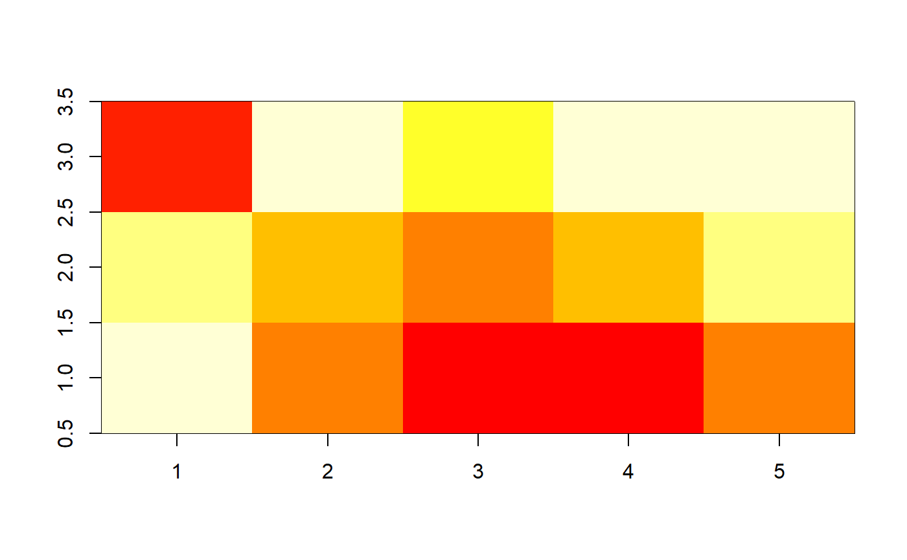

R/list-xyz-tidiers.R
xyz_tidiers.RdTidies lists with components x, y (vector of coordinates) and z (matrix of
values) which are typically used by functions such as
graphics::persp() or graphics::image() and returned
by interpolation functions such as akima::interp().
tidy_xyz(x, ...)
| x | list with components x, y and z |
|---|---|
| ... | extra arguments |
All tidying methods return a data.frame without rownames, whose structure depends on the method chosen.
tidy returns a data frame with columns x, y and z and one row
per value in matrix z.
A <- list(x=1:5, y=1:3, z=matrix(runif(5*3), nrow=5)) image(A)tidy(A)#> # A tibble: 15 x 3 #> x y z #> <int> <int> <dbl> #> 1 1 1 0.885 #> 2 2 1 0.339 #> 3 3 1 0.754 #> 4 4 1 0.802 #> 5 5 1 0.599 #> 6 1 2 0.924 #> 7 2 2 0.202 #> 8 3 2 0.994 #> 9 4 2 0.492 #> 10 5 2 0.419 #> 11 1 3 0.331 #> 12 2 3 0.653 #> 13 3 3 0.263 #> 14 4 3 0.592 #> 15 5 3 0.0341